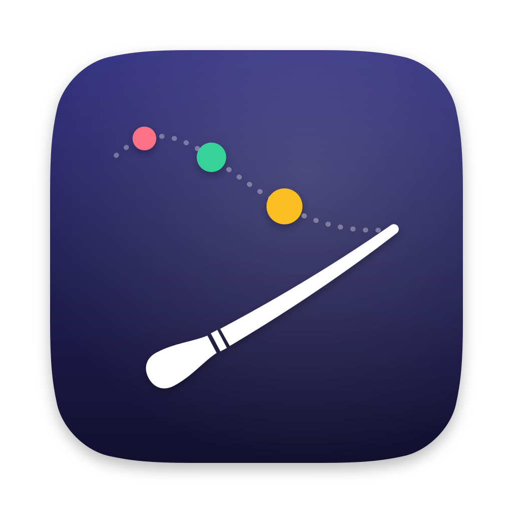

Assemble your team.
Give each bot a role, a provider and a folder to work in. Add instructions and skills that make it right for the job.

sonata.Bring your coding agents together in one macOS app.
Give them a direction. Let Sonata coordinate the work.
Open source · Apple Silicon · Early development
“Build the new settings page, review it, and check it works.”
Your requestBuild the settings page with the project’s existing components.
Review the changes and flag anything that needs another pass.
Break the request into a clear sequence of work.
THE TOOLS YOU ALREADY KNOW, TOGETHER.
LESS TAB SWITCHING. MORE MAKING.
You bring the idea. Master helps turn it into work your bots can do together, while you follow the whole story.
Give each bot a role, a provider and a folder to work in. Add instructions and skills that make it right for the job.
Ask Master to coordinate a request, or talk directly to any bot. They can hand work to one another and share results.
Follow requests on the board, read the conversation, or open a live terminal to see a bot’s CLI as it works.
FIND YOUR RHYTHM
Turn a useful sequence into a workflow. Connect bots on a visual canvas, branch on the outcome, and give the next request a path to follow.
Explore what Sonata can doRIGHT WHERE YOU WORK
Sonata keeps its database, logs and skills locally, with no telemetry. Your coding CLIs connect to their providers using the accounts you already have.
Keep a browser beside the conversation. Pick an element, add a comment and send it straight to a bot.
Build a library of SKILL.md folders. Give bots the same playbook without rewriting your instructions.
Schedule repeat requests in fresh sessions, at a time you choose, while Sonata is running.
Export bots, skills and workflows to another Mac. Archive conversations and return to them later.
OPEN SOURCE. OPEN POSSIBILITIES.
Sonata is in early development. Build it from source, try it on your Mac, and help shape what comes next.
Read the setup guidegit clone https://github.com/jorgegorka/sonata.git
cd sonata
scripts/setup.shThe setup guide covers prerequisites and launching the app.
Know what you’re running. Bots run autonomously with your macOS user’s access to files and commands. Their folders are not sandboxes. Use trusted tasks, skills and configurations. Read the safety note ↗